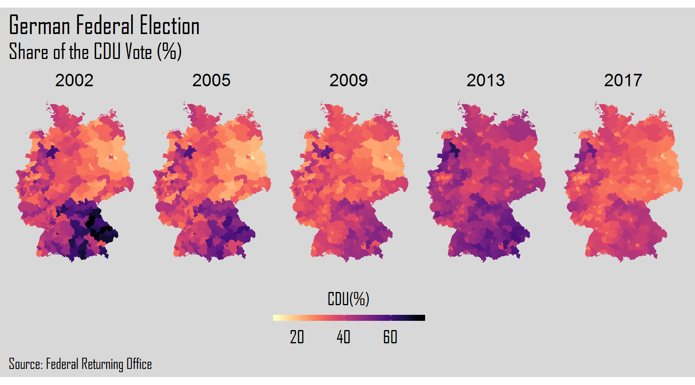
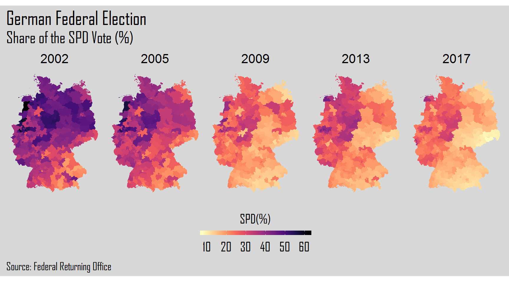
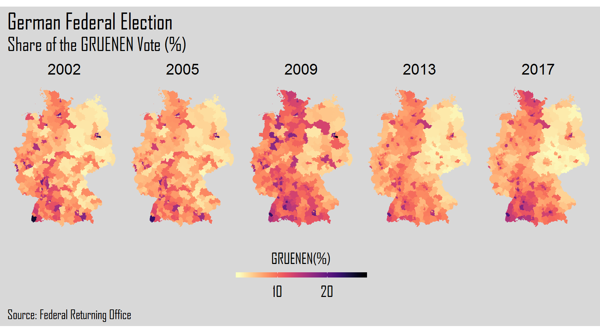
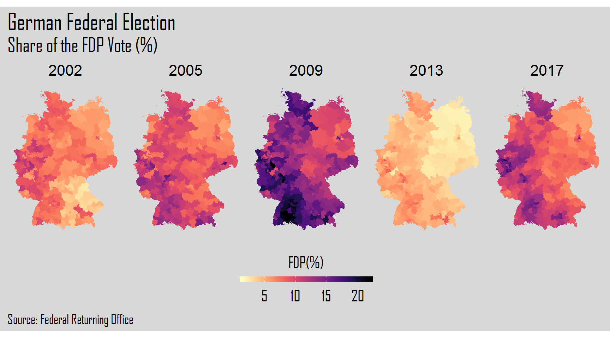
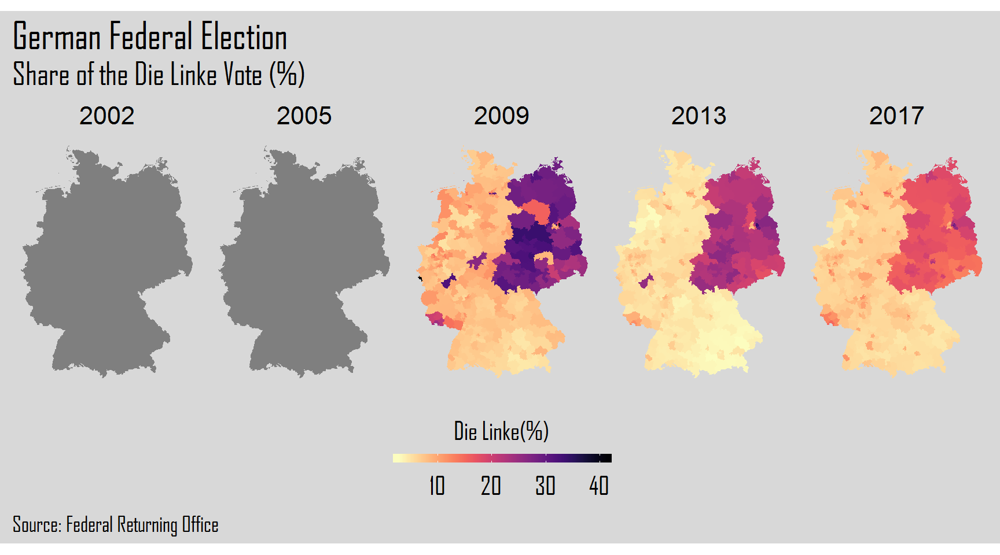
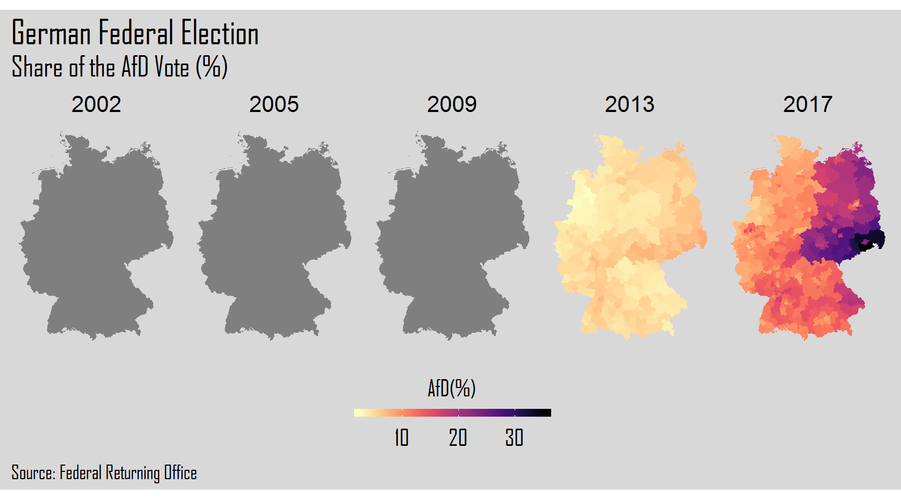

German Elections in the 21st Century
In this blogpost, we will come back to the subject of the German Elections. We will try to show, mostly visually, the changes in election results during the 21st century. Thus, we will use data from the elections in 2002 to the last ones in 2017. The main focus will be mapping the results of the parties represented in the current Bundestag (German Parliament) during this time span. Let’s start our coding.
First, we should load our required packages.
library(rgdal) # open shape file of Germany
library(tidyverse) # data manipulation and visualization
library(purrr) # iterative operations
library(viridis) # color pallete
library(here) # create a file directory
library(extrafont) # load fontsOpening and Tidying the Elections Files
Now, we should open the datafiles where the results of the five Germany Federal Elections (i.e. 2002, 2005, 2009, 2013, 2017) occurred in the 21st century are stored. We can get these files here. Thus, we will create a vector named files using the function list.files. This function creates a character vector including the files’ names specified in the assigned path.
path <- here::here()
files <- list.files(path, pattern = "*_kerg.txt", full.names = TRUE)Now, we will use map_df() from the purrr package to create a data frame that includes the five elections.
all_elections <- map_df(files, read_delim,
delim = ";",
skip = 5, # delete the first five rows of each file
quote = "\"",
col_names = FALSE,
.id = "kerg")Consequently, we have one data frame with the election results from 2002 to 2017. Since our goal is to clean the same, we will create 5 different data frames and clean them separately.
For the data frames of each election year, we have created a vector corresponding to the columns we intend to select. Next, we will clean the data in order to get the share of vote from each party in each one of the 299 voting German districts .
Note: Die Linke and AfD have been included as missing values for the elections where these parties had no representation.
- 2002 elections
#----tidy elections 2002----#
# create a new vector
even_columns02<-seq(12,60,2)
# filter by elections 2002
elections_2002 <- all_elections %>%
filter(kerg == 1) %>%
dplyr::select(1:3, even_columns02) %>%
slice(-c(1:3, 15, 16, 24, 25, 32, 33, 63, 64, 67, 68, 79, 80, 91, 92, 105, 106,
171, 172, 190, 191, 213, 214, 225, 226, 242, 243, 288, 289, 327, 328, 333:335)) %>%
rename(id = X1, district = X2, SPD = X11, CDU = X13, CSU = X15,
Gruenen = X17, FDP = X19) %>%
# mutate variables to numeric from the 3rd to the 45th column
mutate_at(vars(4:19), as.numeric) %>%
# mutate 2nd column to character
mutate_at(vars(2), as.integer) %>%
# create new variables - percentage of the major parties
mutate(CDU_CSU = rowSums(.[c(5,6)], na.rm = TRUE),
CDU_CSU_perc = CDU_CSU / rowSums(.[4:19], na.rm = TRUE) * 100,
SPD_perc = SPD / rowSums(.[4:19], na.rm = TRUE) * 100,
Gruenen_perc = Gruenen / rowSums(.[4:19], na.rm = TRUE) * 100,
FDP_perc = FDP / rowSums(.[4:19], na.rm = TRUE) * 100,
DieLinke_perc = NA,
AfD_perc = NA) %>%
# select columns
dplyr::select(CDU_CSU_perc,SPD_perc,
Gruenen_perc, FDP_perc, DieLinke_perc, AfD_perc,
kerg, id, district)- 2005 elections
#----tidy elections 2005----#
# create a new vector
odd_columns05<-seq(23,147,4)
# filter by elections 2005
elections_2005 <- all_elections %>%
filter(kerg == 2) %>%
dplyr::select(1:3, odd_columns05) %>%
slice(-c(1:3, 15, 16, 24, 25, 32, 33, 63,
64, 67, 68, 79, 80, 91, 92, 105, 106,
171, 172, 190, 191, 213, 214, 224, 225,
241, 242, 288, 289, 327, 328, 333:335)) %>%
rename(id = X1, district = X2, SPD = X22, CDU = X26, CSU = X30,
Gruenen = X34, FDP = X38, DieLinke = X42) %>%
# mutate variables to numeric from the 3rd to the 45th column
mutate_at(vars(4:35), as.numeric) %>%
# mutate 2nd column to character
mutate_at(vars(2), as.integer) %>%
# create new variables - percentage of the major parties
mutate(CDU_CSU = rowSums(.[c("CDU", "CSU")], na.rm = TRUE),
CDU_CSU_perc = CDU_CSU / rowSums(.[4:35], na.rm = TRUE) * 100,
SPD_perc = SPD / rowSums(.[4:35], na.rm = TRUE) * 100,
Gruenen_perc = Gruenen / rowSums(.[4:35], na.rm = TRUE) * 100,
FDP_perc = FDP / rowSums(.[4:35], na.rm = TRUE) * 100,
DieLinke_perc = NA,
AfD_perc = NA) %>%
# select columns
dplyr::select(CDU_CSU_perc,SPD_perc,
Gruenen_perc, FDP_perc, DieLinke_perc, AfD_perc,
kerg, id, district) - 2009 elections
#----tidy elections 2009----#
# create a new vector
odd_columns09<-seq(23,135,4)
# filter by elections 2009
elections_2009 <- all_elections %>%
filter(kerg == 3) %>%
dplyr::select(1:3, odd_columns09) %>%
slice(-c(1:3, 15, 16, 24, 25, 32, 33, 64,
65, 68, 69, 80, 81, 91, 92, 105, 106,
171, 172, 189, 190, 212, 213, 223, 224,
240, 241, 287, 288, 327, 328, 333:335)) %>%
rename(id = X1, district = X2, SPD = X22, CDU = X26, FDP = X30,
DieLinke = X34, Gruenen = X38, CSU = X42) %>%
# mutate variables to numeric from the 3rd to the 45th column
mutate_at(vars(4:32), as.numeric) %>%
# mutate 2nd column to character
mutate_at(vars(2), as.integer) %>%
# create new variables - percentage of the major parties
mutate(CDU_CSU = rowSums(.[c("CDU", "CSU")], na.rm = TRUE),
CDU_CSU_perc = CDU_CSU / rowSums(.[4:32], na.rm = TRUE) * 100,
SPD_perc = SPD / rowSums(.[4:32], na.rm = TRUE) * 100,
Gruenen_perc = Gruenen / rowSums(.[4:32], na.rm = TRUE) * 100,
FDP_perc = FDP / rowSums(.[4:32], na.rm = TRUE) * 100,
DieLinke_perc = DieLinke / rowSums(.[4:32], na.rm = TRUE) * 100,
AfD_perc = NA) %>%
# select columns
dplyr::select(CDU_CSU_perc,SPD_perc,
Gruenen_perc, FDP_perc, DieLinke_perc, AfD_perc,
kerg, id, district) - 2013 elections
#----tidy elections 2013----#
# create a new vector
odd_columns13<-seq(23,159,4)
# filter by elections 2005
elections_2013 <- all_elections %>%
filter(kerg == 4) %>%
dplyr::select(1:3, odd_columns13) %>%
slice(-c(1:3, 15, 16, 23, 24, 55, 56, 59, 60, 125, 126, 149, 150,
166, 167, 206, 207, 253, 254, 259, 260, 273, 274, 285, 286, 293, 294, 311, 312,
322, 323, 333:335)) %>%
rename(id = X1, district = X2, CDU = X22, SPD = X26, FDP = X30,
DieLinke = X34, Gruenen = X38, CSU = X42, AfD = X106) %>%
# mutate variables to numeric from the 3rd to the 45th column
mutate_at(vars(4:38), as.numeric) %>%
# mutate 2nd column to character
mutate_at(vars(2), as.integer) %>%
# create new variables - percentage of the major parties
mutate(CDU_CSU = rowSums(.[c("CDU", "CSU")], na.rm = TRUE),
CDU_CSU_perc = CDU_CSU / rowSums(.[4:38], na.rm = TRUE) * 100,
SPD_perc = SPD / rowSums(.[4:38], na.rm = TRUE) * 100,
Gruenen_perc = Gruenen / rowSums(.[4:38], na.rm = TRUE) * 100,
FDP_perc = FDP / rowSums(.[4:38], na.rm = TRUE) * 100,
DieLinke_perc = DieLinke / rowSums(.[4:38], na.rm = TRUE) * 100,
AfD_perc = AfD / rowSums(.[4:38], na.rm = TRUE) * 100) %>%
# select columns
dplyr::select(CDU_CSU_perc,SPD_perc,
Gruenen_perc, FDP_perc, DieLinke_perc, AfD_perc,
kerg, id, district) - 2017 elections
#----tidy elections 2017----#
# create a new vector
odd_columns2017<-seq(23,191,4)
# filter by elections 2017
elections_2017 <- all_elections %>%
filter(kerg == 5) %>%
dplyr::select(1:3, odd_columns2017) %>%
slice(-c(1:3, 15, 16, 23, 24, 31, 32, 63, 64, 67, 68, 79, 80, 90, 91, 104, 105,
170, 171, 188, 189, 212, 213, 222, 223, 239, 240, 287, 288, 327, 328, 333:335)) %>%
rename(id = X1, district = X2, CDU = X22, SPD = X26, DieLinke = X30,
Gruenen = X34, CSU = X38, FDP = X42, AfD = X46) %>%
# mutate variables to numeric from the 3rd to the 45th column
mutate_at(vars(4:46), as.numeric) %>%
# mutate 2nd column to character
mutate_at(vars(2), as.integer) %>%
# create the CDU/CSU variable and all the percentage values of each party for each state
mutate(CDU_CSU = rowSums(.[c("CDU", "CSU")], na.rm = TRUE),
CDU_CSU_perc = CDU_CSU / rowSums(.[4:46], na.rm = TRUE) * 100,
SPD_perc = SPD / rowSums(.[4:46], na.rm = TRUE) * 100,
DieLinke_perc = DieLinke / rowSums(.[4:46], na.rm = TRUE) * 100,
Gruenen_perc = Gruenen / rowSums(.[4:46], na.rm = TRUE) * 100,
FDP_perc = FDP / rowSums(.[4:46], na.rm = TRUE) * 100,
AfD_perc = AfD / rowSums(.[4:46], na.rm = TRUE) * 100) %>%
# reorder and delete columns 10 to 45
dplyr::select(CDU_CSU_perc,SPD_perc,
Gruenen_perc, FDP_perc, DieLinke_perc, AfD_perc,
kerg, id, district) Now that we have cleaned the election results for each year, we must bind the 5 data frames together in one. For this, we will use the function do.call with the arguments rbind and a list with the 5 data frames.
#------Bind Rows of all elections----
elections_21st <- do.call("rbind", list(elections_2002,
elections_2005,
elections_2009,
elections_2013,
elections_2017))So, we have one data frame with all the election results from the current century. The last step during this analysis is to create the variable year.
# create variable year
elections_21st <- elections_21st %>%
mutate(year = case_when(kerg == 1 ~ 2002,
kerg == 2 ~ 2005,
kerg == 3 ~ 2009,
kerg == 4 ~ 2013,
kerg == 5 ~ 2017))We can now explore our dataset and check the results of each party across the 5 elections:
elections_21st %>%
group_by(year) %>%
summarize(CDU = mean(CDU_CSU_perc, na.rm = TRUE),
SPD = mean(SPD_perc, na.rm = TRUE),
Gruenen = mean(Gruenen_perc, na.rm = TRUE),
FDP = mean(FDP_perc, na.rm = TRUE),
DieLinke = mean(DieLinke_perc, na.rm = TRUE),
AfD = mean(AfD_perc, na.rm = TRUE))## # A tibble: 5 x 7
## year CDU SPD Gruenen FDP DieLinke AfD
## <dbl> <dbl> <dbl> <dbl> <dbl> <dbl> <dbl>
## 1 2002 38.5 39.1 8.56 7.41 NaN NaN
## 2 2005 35.1 34.3 8.06 9.77 NaN NaN
## 3 2009 33.7 23.0 10.6 14.4 12.2 NaN
## 4 2013 41.5 25.8 8.30 4.70 8.73 4.71
## 5 2017 32.9 20.7 8.78 10.7 9.27 12.8Spatial Data of Germany
Let us now work on the spatial data of Germany. We can use the readOGR() function from the rgdal package to load the shape file of Germany with 299 districts. The shape file is available here.
# map of germany
# open shape file germany with districts
germany_map <- readOGR(here("geometrie_Wahlkreise_19DBT_geo.shp"),
use_iconv = TRUE,
encoding = "UTF-8")## OGR data source with driver: ESRI Shapefile
## Source: "C:\Users\Diana\Downloads\hugoblog\geometrie_Wahlkreise_19DBT_geo.shp", layer: "geometrie_Wahlkreise_19DBT_geo"
## with 299 features
## It has 5 fields# plot file
plot(germany_map)
Now that we have the shape file of Germany, we need to transform it in a data frame format.
# transform in a dataframe and create column id
germany_new <- germany_map@data%>%
as.data.frame() %>%
rownames_to_column("id")
# fortify the dataframe
germany_map <- fortify(germany_map) %>%
left_join(germany_new, by = "id")## Regions defined for each PolygonsAfter this transformation, we must join the Germany map data frame with the elections data frame using the function left_join().
# join map dataframe with elections dataframe by district variable
germany_df <- elections_21st %>%
left_join(germany_map, by = c("id" = "wkr_nr")) %>%
glimpse()## Observations: 350,655
## Variables: 21
## $ CDU_CSU_perc <dbl> 36.71702, 36.71702, 36.71702, 36.71702, 36.71702...
## $ SPD_perc <dbl> 44.37667, 44.37667, 44.37667, 44.37667, 44.37667...
## $ Gruenen_perc <dbl> 9.205313, 9.205313, 9.205313, 9.205313, 9.205313...
## $ FDP_perc <dbl> 7.513961, 7.513961, 7.513961, 7.513961, 7.513961...
## $ DieLinke_perc <dbl> NA, NA, NA, NA, NA, NA, NA, NA, NA, NA, NA, NA, ...
## $ AfD_perc <dbl> NA, NA, NA, NA, NA, NA, NA, NA, NA, NA, NA, NA, ...
## $ kerg <chr> "1", "1", "1", "1", "1", "1", "1", "1", "1", "1"...
## $ id <int> 1, 1, 1, 1, 1, 1, 1, 1, 1, 1, 1, 1, 1, 1, 1, 1, ...
## $ district <chr> "Flensburg - Schleswig", "Flensburg - Schleswig"...
## $ year <dbl> 2002, 2002, 2002, 2002, 2002, 2002, 2002, 2002, ...
## $ long <dbl> 9.676908, 9.739760, 9.740846, 9.746661, 9.790881...
## $ lat <dbl> 54.83785, 54.82334, 54.82348, 54.82418, 54.79797...
## $ order <int> 1, 2, 3, 4, 5, 6, 7, 8, 9, 10, 11, 12, 13, 14, 1...
## $ hole <lgl> FALSE, FALSE, FALSE, FALSE, FALSE, FALSE, FALSE,...
## $ piece <fct> 1, 1, 1, 1, 1, 1, 1, 1, 1, 1, 1, 1, 1, 1, 1, 1, ...
## $ id.y <chr> "63", "63", "63", "63", "63", "63", "63", "63", ...
## $ group <fct> 63.1, 63.1, 63.1, 63.1, 63.1, 63.1, 63.1, 63.1, ...
## $ cartodb_id <int> 1, 1, 1, 1, 1, 1, 1, 1, 1, 1, 1, 1, 1, 1, 1, 1, ...
## $ wkr_name <fct> Flensburg – Schleswig, Flensburg – Schleswig, Fl...
## $ land_name <fct> Schleswig-Holstein, Schleswig-Holstein, Schleswi...
## $ land_nr <fct> 01, 01, 01, 01, 01, 01, 01, 01, 01, 01, 01, 01, ...Plot the Results of the German Elections
The final step will be the creation of plots of each election year for each one of the six parties. For this, we will use a for loop. After the for() we will add 1:6 corresponding to the columns of each party. Inside the curly brackets, we will create our plot resorting to the ggplot2 package.
for(i in 1:6){
colsnames <- c("CDU", "SPD", "GRUENEN",
"FDP", "Die Linke", "AfD")
plot <- ggplot(germany_df, aes(x = long, y = lat,
group = group)) +
geom_polygon(aes(fill = germany_df[[i]])) +
scale_fill_viridis(
option = "magma",
direction = -1,
name = paste(colsnames[i], "(%)", sep = ""),
guide = guide_colorbar(
direction = "horizontal",
barheight = unit(2, units = "mm"),
barwidth = unit(50, units = "mm"),
draw.ulim = F,
title.position = 'top',
title.hjust = 0.5,
label.hjust = 0.5)) +
theme(plot.title = element_text(family = "Agency FB",
color = "black",
size = 24,
hjust = 0),
plot.subtitle = element_text(family ="Agency FB", color = "black",
size = 20,
hjust = 0),
plot.caption = element_text(family = "Agency FB",
color = "black",
size = 14,
hjust = 0),
plot.background = element_rect(fill = "#D8D8D8",
color = NA),
panel.background = element_rect(fill = "#D8D8D8",
color = NA),
legend.background = element_rect(fill = "#D8D8D8",
color = NA),
legend.text = element_text(family = "Agency FB",
size = 16, color = "black"),
legend.title = element_text(family = "Agency FB",
size = 16, color = "black"),
axis.line = element_blank(),
axis.ticks = element_blank(),
panel.grid = element_blank(),
axis.title = element_blank(),
axis.text = element_blank(),
strip.background = element_blank(),
strip.text = element_text(color = "black", size = 16),
legend.position = "bottom") +
coord_map() +
facet_grid(.~year) +
labs(title = "German Federal Election",
subtitle = paste("Share of the ",
colsnames[i], " Vote (%)", sep=""),
caption = "Source: Federal Returning Office")
print(plot)
}
Hope you liked the visual power that R gives us to explore and analyze data. Thank you again and keep coding!